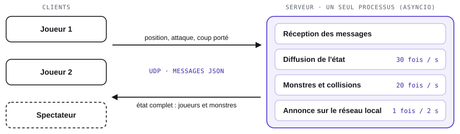

01Me présenter introduction
1.1D’où je viens
Je m’appelle Louis Schwartz. Je suis en deuxième année du cycle préparatoire de l’EPITA, à Toulouse. J’y suis entré après un baccalauréat général, spécialités mathématiques et physique-chimie, obtenu avec la mention assez bien au lycée Turgot de Limoges.
Je suis venu à l’informatique par le jeu vidéo : je voulais comprendre comment un jeu fonctionne, puis en fabriquer un. J’ai choisi l’EPITA pour la qualité de sa formation en informatique. Depuis, deux domaines se sont ajoutés à cette première passion : l’intelligence artificielle et la cybersécurité.
Je m’intéresse aux deux faces d’un logiciel : ce qui se passe sous le capot (mémoire, réseau, système) et ce que voit l’utilisateur (interface, graphismes). En dehors des cours, je suis vice-responsable du pôle partenariats du Bureau des élèves (BDE).
1.2À quoi sert ce portfolio
Ce portfolio est un outil évolutif : je le mettrai à jour à la fin de chaque semestre. Cette première version fait le point sur ma première année et sur le début de la deuxième. Elle a trois objectifs :
- présenter mon parcours et ce que l’EPITA m’a appris ;
- démontrer, preuves à l’appui, trois compétences sur lesquelles je peux m’appuyer ;
- évaluer lucidement ce qui me manque encore, et dire comment j’y travaille.
1.3Comment le lire
Le document va des faits vers l’analyse : ma formation (partie 2), quatre projets suivis chacun d’un retour critique (partie 3), mon engagement associatif (partie 4), puis trois compétences clés et mon bilan (partie 5). Les parties 6 et 7 regardent vers la suite. Les extraits de code et les sources complètent cette présentation.
02Apprendre mon parcours à l’EPITA
2.1Deux ans de cycle préparatoire
Le cycle préparatoire de l’EPITA dure deux ans. Il associe l’informatique, les sciences et la communication, et donne une large place aux projets.
| Domaine | Première année (2025-2026) | Deuxième année, semestre 3 |
|---|---|---|
| Programmation | Python, puis C : pointeurs, chaînes de caractères, listes chaînées, pointeurs de fonctions ; Git | C : structures, fichiers, processus, images avec SDL |
| Algorithmique | Listes, matrices, arbres binaires et arbres de recherche ; initiation à OCaml | Théorie des langages : expressions régulières, automates |
| Architecture | Algèbre de Boole, logique séquentielle, microprocesseurs | Assembleur 68000 : pile, sous-programmes |
| Sciences | Suites, algèbre linéaire, probabilités ; mécanique, électronique, électromagnétisme | Mathématiques, physique |
| Ouvertures | IA générative, initiation à la cybersécurité, création d’entreprise, communication, anglais | Communication professionnelle (ce portfolio), anglais |
2.2Ce que les cours m’ont donné
- Programmer en C sans filet : je gère la mémoire à la main et je manipule pointeurs, listes chaînées et pointeurs de fonctions.
- Raisonner en algorithmes : choisir une structure de données, écrire une fonction récursive, estimer le coût d’un parcours.
- Comprendre la machine : de la porte logique à l’assembleur, je commence à voir ce que devient mon code une fois compilé.
- Relier les mathématiques au code : le calcul intégral et les probabilités m’ont servi dans le projet PFA, les dérivées dans le réseau de neurones de l’OCR.
- Travailler avec méthode : Git, tests automatiques, rendus à date fixe.
2.3Ce qui a compté
J’ai validé l’ensemble de ma première année. Mes meilleurs résultats sont en programmation et en algorithmique : ce sont aussi les matières où je travaille le plus volontiers.
Trois projets ont marqué cette première année. Myst et MiniMake sont détaillés en partie 3. Le troisième, PFA (Probabilités, Finance et Assurance), mêlait mathématiques et programmation : en C, j’ai programmé sept formules d’intégration numérique (rectangles, trapèzes, Simpson, Gauss), puis je les ai utilisées pour calculer le prix d’une option et la loi des remboursements d’un assuré.
La première année m’a appris à programmer avec rigueur : en C, un programme qui « marche » mais perd de la mémoire est un programme faux. PFA m’a montré que les mathématiques du cours deviennent des outils dès qu’on les code. Je souhaite maintenant mobiliser ces acquis dans un cadre professionnel (partie 6).
03Construire quatre projets
J’ai retenu quatre projets : deux projets scolaires terminés, un projet scolaire en cours et un projet personnel. Chacun suit le même plan : le but, ma part, mes choix, le résultat, puis ce que j’en retiens.
3.1Myst : faire jouer plusieurs machines ensemble
| CadreProjet de groupe du semestre 2 | QuandJanvier à mai 2026 | Équipe4 étudiants | OutilsPython, pygame, asyncio, sockets UDP, JSON, Git |
Le but
Créer un jeu d’exploration de donjon en 2D, jouable à plusieurs sur un réseau local : salles générées aléatoirement, monstres, coffres et boss.
Ma part
J’ai pris en charge deux parties : le mode multijoueur et une grande part des graphismes. Côté réseau, j’ai développé le serveur de jeu, la synchronisation des joueurs et des monstres, la découverte des parties sur le réseau local, le mode spectateur et la relance d’une partie pour tous les joueurs. Côté graphismes, j’ai réalisé les sprites du personnage principal, les salles du donjon et une partie des monstres (figure 2). J’ai aussi écrit les scripts d’installation pour Linux et Windows, et réorganisé le dépôt avant le rendu.

Pourquoi ces choix
- UDP plutôt que TCP. Dans un jeu d’action, une position vieille d’une demi-seconde ne sert plus à rien. UDP n’attend pas les paquets perdus : l’envoi suivant corrige l’erreur. Le serveur diffuse donc l’état de la partie 30 fois par seconde (extrait 1).
- Un serveur qui fait autorité. Monstres, collisions et dégâts sont calculés par le serveur, 20 fois par seconde. Tous les joueurs voient ainsi le même monstre au même endroit.
- asyncio et JSON. Réception des messages, diffusion de l’état et comportement des monstres sont trois boucles qui tournent ensemble dans un seul processus. Les messages sont en JSON : plus lourd qu’un format binaire, mais lisible à l’œil nu, donc facile à déboguer.
Ce qui a résisté
- Rejoindre une partie sans taper d’adresse IP. Le serveur annonce le nom de la partie sur le réseau local toutes les deux secondes ; le client écoute et se connecte à la partie demandée.
- UDP n’a pas de connexion. Rien ne signale qu’un joueur est parti : le serveur retire donc tout joueur silencieux depuis cinq secondes.
- Des joueurs désynchronisés à la relance. Quand l’hôte recommençait, certains clients restaient dans l’ancienne partie. Le serveur envoie maintenant un message de relance à tous, spectateurs compris.
Ce que ça donne
Un jeu jouable à plusieurs en réseau local, avec trois types de monstres, un boss, des coffres et un mode spectateur après la mort du joueur. Il s’installe en une commande, sous Linux comme sous Windows.
J’ai longtemps travaillé sur ma machine avant de partager mon code. Quand tout a été fusionné, la dernière semaine, les conflits se sont accumulés, jusque sur l’image de la carte, impossible à fusionner. La fin du projet a été plus tendue qu’elle n’aurait dû l’être. Depuis, je travaille par petites branches, fusionnées dès qu’une fonctionnalité marche : c’est ce que j’applique sur Icarus et sur l’OCR. Sur le plan technique, j’enverrais aujourd’hui seulement ce qui a changé, plutôt que l’état complet à chaque envoi.
Voir un extrait de code La synchronisation réseau de Myst
Trente fois par seconde, le serveur retire les joueurs silencieux, puis envoie à chaque client la position des joueurs et l’essentiel de l’état des monstres.
async def broadcast_loop(self):
while self.running:
now = time.time()
# Handle timeouts
to_remove = []
for addr, pid in list(self.clients.items()):
if now - self.player_states[pid]["last_seen"] > 5.0:
to_remove.append(addr)
for addr in to_remove:
pid = self.clients.pop(addr)
self.player_states.pop(pid)
if self.clients:
# Optimize monster states for network transfer
sync_monsters = {}
for mid, mstate in self.monster_states.items():
# Only send essential fields to keep UDP packet size small
sync_monsters[mid] = {
"pos": mstate["pos"],
"health": mstate["health"],
"alive": mstate["alive"],
# ...
}
sync_msg = {
"type": "sync",
"players": self.player_states,
"monsters": sync_monsters
}
for addr in self.clients:
await self.send_to(sync_msg, addr)
await asyncio.sleep(1/30) # 30 FPS updates
3.2MiniMake : refaire make pour le comprendre
| CadreProjet individuel du semestre 2 | QuandAvril à mai 2026 | ÉquipeSeul | OutilsC, appels système POSIX, AddressSanitizer, tests en Python |
Le but
Reproduire le cœur de l’outil make : lire un fichier de règles, retrouver les dépendances d’une cible et lancer les commandes dans le bon ordre.
Ma part et mes choix
J’ai conçu et écrit seul l’ensemble du programme : environ 800 lignes de C. Je l’ai découpé comme un petit compilateur. Le tokenizer transforme chaque ligne en une liste de jetons (mot, variable, opérateur, tabulation). Le parser reconnaît le type de la ligne (règle, commande ou variable) et remplit des listes chaînées. L’exécuteur parcourt les dépendances de façon récursive, puis lance chaque commande dans un processus fils (fork, puis exec ; extrait 3). Ce découpage permet de vérifier chaque étape séparément : l’option -p affiche ce que le parser a compris, sans rien exécuter.
Ce qui a résisté
- Les fuites de mémoire. Chaque jeton et chaque règle sont alloués dynamiquement. J’ai compilé avec AddressSanitizer, qui signale la moindre fuite, et écrit une fonction de libération par structure.
- Les variables. Les
${VAR}sont remplacées juste avant l’exécution ; une variable inconnue vaut une chaîne vide, comme dansmake.
Ce que ça donne
MiniMake lit un Makefile simple, exécute ses règles dans l’ordre et affiche des messages d’erreur calqués sur ceux de GNU make.
Le découpage en modules est ce que je referais à l’identique. Les tests, non : je n’en ai écrit que deux, sur le cas normal, et j’ai vérifié les cas d’erreur à la main, la veille du rendu. Limite connue : mon MiniMake relance toutes les commandes, sans comparer les dates des fichiers. La prochaine fois, j’écris les tests des cas d’erreur avant le code.
Voir un extrait de code L’exécution d’une cible dans MiniMake
Avant d’exécuter une cible, MiniMake exécute chacune de ses dépendances. Une dépendance sans règle arrête le programme, avec le même message que GNU make.
int run_target(char *target_name, makefile *mk)
{
rule *r = find_rule(mk->rules, target_name);
if (!r)
{
printf("minimake: *** No rule to make target '%s'. Stop.\n", target_name);
return -1;
}
if (r->depcies)
{
for (int i = 0; r->depcies[i] != NULL; i++)
{
if (!find_rule(mk->rules, r->depcies[i]))
{
printf("minimake: *** No rule to make target '%s', needed by '%s'. Stop.\n",
r->depcies[i], r->target);
return -1;
}
if (run_target(r->depcies[i], mk) == -1)
return -1;
}
}
return execute_recipe(r, mk);
}
3.3OCR : apprendre à une machine à lire (en cours)
| CadreProjet de groupe du semestre 3 | QuandAutomne 2026, en cours | Équipe4 étudiants | OutilsC, Makefile, AddressSanitizer, Git |
Le but
Écrire un programme qui résout une grille de mots mêlés à partir d’une photo : repérer la grille, reconnaître chaque lettre, puis chercher les mots.
Ma part
Je suis chargé du réseau de neurones qui reconnaîtra les lettres. J’ai aussi posé l’ossature du dépôt : l’arborescence, le Makefile et une bibliothèque par module (réseau de neurones, image, solveur, interface), pour que chacun avance sans gêner les autres. J’aiderai ensuite au traitement d’image.
Comment c’est construit
Le réseau est écrit sans bibliothèque d’apprentissage. Chaque couche est une structure qui porte ses poids, ses biais et ses sorties ; le réseau est un tableau de couches. On peut donc changer le nombre de couches et de neurones sans toucher au code. Propagation avant, rétropropagation du gradient et mise à jour des poids tiennent en trois fonctions (extrait 2).
Où j’en suis
Une preuve de concept : un réseau à deux neurones cachés apprend la fonction XOR, qu’un neurone seul ne peut pas apprendre. Après 100 000 passes sur les quatre exemples, ses réponses sont à moins de 0,01 de la valeur attendue (figure 3).
$ ./build/poc
epoch 100000 :
[0, 0] : 0.004935
[1, 0] : 0.995334
[0, 1] : 0.994323
[1, 1] : 0.004444
Ce projet démarre mieux que Myst : l’interface du réseau de neurones est fixée dans des fichiers d’en-tête, et chaque fonctionnalité a sa branche. Point de vigilance : le réseau n’a encore appris qu’un problème à quatre exemples. Le passage à de vraies images de lettres posera des questions que je n’ai pas encore rencontrées : taille du réseau, durée de l’entraînement, sauvegarde des poids.
Voir un extrait de code Le réseau de neurones de l’OCR
La sortie de chaque couche devient l’entrée de la suivante. L’erreur est ensuite calculée sur la dernière couche, puis remontée couche par couche.
void network_forward(Network *net, double *input)
{
double *a = input;
for (int i = 0; i < net->n_layers; i++)
{
layer_forward(net->layers[i], a);
a = net->layers[i]->a;
}
}
void network_backward(Network *net, double *expected)
{
int last = net->n_layers - 1;
layer_delta_output(net->layers[last], expected);
for (int i = last - 1; i >= 0; i--)
layer_delta_hidden(net->layers[i], net->layers[i + 1]);
}
void network_update(Network *net, double *input, double lr)
{
double *prev_input = input;
for (int i = 0; i < net->n_layers; i++)
{
layer_update(net->layers[i], prev_input, lr);
prev_input = net->layers[i]->a;
}
}
3.4Icarus : dessiner mon propre bureau (en cours)
| CadreProjet personnel | QuandDepuis octobre 2026 | ÉquipeSeul | OutilsQML (Quickshell), Hyprland, Linux, Git |
Le but
Remplacer la barre d’état de mon environnement Linux par un seul « îlot » en haut de l’écran. Il affiche l’essentiel (espaces de travail, heure, réseau, batterie) et s’agrandit au survol (figure 4). Ma priorité : la stabilité avant les fonctionnalités.
Ma part et ma méthode
Je conçois l’interface et je pilote le développement. J’écris d’abord une spécification, que je fige par tranches avant de coder. Pour chaque élément, je compare plusieurs variantes à l’écran avant de trancher : taille des pastilles, forme de la batterie, espacements. Je développe avec un assistant de programmation (Claude Code) et une règle : je ne valide que le code que je peux expliquer ligne par ligne. L’assistant me fait gagner du temps sur un langage que je découvre ; les décisions, la relecture et les tests restent les miens.
Comment c’est construit
Chaque source de données (heure, réseau, batterie) est un service unique, séparé de son affichage. Tous les réglages ont une valeur par défaut livrée avec le code : Icarus démarre sur une machine vierge, sans configuration. Une erreur dans le fichier de réglages ne bloque rien : la valeur par défaut prend le relais.
Où j’en suis
La version 0.0.1 est étiquetée depuis le 12 octobre 2026. Laissée allumée une nuit entière, elle occupe 132 Mo de mémoire sans croissance, pour environ 0,02 % du processeur. Le dépôt compte 34 commits, avec une branche par fonctionnalité.
Ce projet a changé ma méthode : spécifier avant de coder, une branche par fonctionnalité, des messages de commit normalisés. Mon défaut est de courir après les nouvelles idées. Je les note désormais dans un fichier à part, sans toucher à la tranche en cours.
04S’engager le Bureau des élèves
Mon engagement au Bureau des élèves me permet de développer la communication professionnelle, l’organisation et le suivi de relations avec des entreprises.
4.1Trouver des partenaires pour les étudiants
| OùBDE, EPITA Toulouse | RôleVice-responsable du pôle partenariats | Équipe4 personnes | Face àEntreprises partenaires |
Le pôle cherche des entreprises prêtes à offrir des avantages aux étudiants. Je seconde le responsable, je contacte des entreprises et je suis les dossiers jusqu’à la signature.
Avec le responsable du pôle, j’ai participé aux échanges qui ont abouti au partenariat avec Klub, une application de bons plans pour les moins de 26 ans : les étudiants obtiennent 5 € de réduction sur l’abonnement annuel. Nous suivons les prises de contact, les relances et l’avancement de chaque dossier dans un tableau de bord partagé.
Convaincre une entreprise n’a rien à voir avec convaincre un compilateur. Il faut comprendre ce que l’autre y gagne, relancer sans insister et tenir ses engagements. J’y apprends à écrire un message court et clair à quelqu’un qui ne me doit rien. Il me reste à mener un partenariat seul.
05Faire le point compétences et bilan
De ces expériences, je retiens trois compétences clés, chacune soutenue par plusieurs preuves.
Compétence clé 1 sur 3
5.1Programmer au plus près de la machine et du réseau
À quoi elle sert. En cybersécurité comme en intelligence artificielle, utiliser des outils ne suffit pas : il faut savoir ce qu’ils font de la mémoire et de ce qui circule sur le réseau.
- MiniMake 800 lignes de C, mémoire gérée à la main, processus fils
- Myst serveur UDP asynchrone, synchronisation de plusieurs machines
- OCR réseau de neurones écrit sans bibliothèque
- Cursus C depuis la première année, PFA, assembleur
Acquis
|
À consolider
|
Ensuite → sur l’OCR, ajouter un débogueur et Valgrind ; réécrire en C un petit client-serveur.
Compétence clé 2 sur 3
5.2Concevoir un logiciel, de l’architecture à l’interface
À quoi elle sert. Un programme qui fonctionne ne suffit pas. Il doit être découpé pour évoluer, et pensé pour celui qui l’utilise.
- MiniMake découpage en tokenizer, parser et exécuteur
- OCR en-têtes séparés du code, une bibliothèque par module
- Icarus spécification, services séparés de l’affichage, choix sur aperçus
- Myst menus, retour visuel des coups, sprites, installation en une commande
Acquis
|
À consolider
|
Ensuite → sur l’OCR, écrire l’en-tête et un test avant chaque module ; tenir un README à jour.
Compétence clé 3 sur 3
5.3Travailler en équipe et intégrer le travail des autres
À quoi elle sert. Un logiciel se construit à plusieurs. Le plus difficile n’est pas d’écrire sa partie, mais de la faire fonctionner avec celles des autres.
- Myst fusion des branches ; monstres d’un coéquipier adaptés au serveur
- OCR ossature commune du dépôt, pensée pour quatre personnes
- BDE pôle de quatre personnes, partenariat mené en binôme
Acquis
|
À consolider
|
Ensuite → pousser ma branche dès le premier jour ; noter les décisions du groupe ; mener seul un partenariat.
5.4Vue d’ensemble
Mes compétences techniques (hard skills), mes méthodes et mes compétences humaines (soft skills), avec le niveau que je m’attribue. Les preuves sont dans les projets de la partie 3.
autonome · en progression · découverte
TechniqueC : mémoire, processus
Python
Réseau : UDP
Réseaux de neurones
QML, Linux au quotidien
Assembleur, sécurité
|
MéthodeGit : branches, versions
Découpage en modules
Spécification
Assistants IA
Tests automatiques
|
HumainVolonté d’apprendre
Souci du détail
Travail en équipe
Communication écrite
Négociation
|
Langues : français (langue maternelle), anglais (niveau B2).
5.5Forces et chantiers
Mes points forts, puis mes axes d’amélioration, chacun avec la première action prévue.
Je peux m’appuyer sur
|
Je dois faire progresser
|
06Continuer perspectives
6.1Ce qui m’attire
- Intelligence artificielle. Écrire un réseau de neurones à la main pour l’OCR m’a donné envie de comprendre les modèles, et pas seulement de les utiliser.
- Cybersécurité. Je l’ai découverte en première année. Le réseau de Myst et mon usage quotidien de Linux m’en ont rapproché, mais je ne l’ai pas encore pratiquée : c’est le domaine où j’ai le plus à apprendre.
- Jeu vidéo. Mon point de départ, et un terrain où le réseau, l’algorithmique et le graphisme se rencontrent.
6.2Ce que je vise
Je souhaite poursuivre le cycle ingénieur de l’EPITA et construire un projet professionnel en développement logiciel, avec une spécialisation en intelligence artificielle ou en cybersécurité. Pour préciser cette orientation, je compte terminer le projet OCR, pratiquer la sécurité sur des environnements d’entraînement et rechercher un stage en entreprise. Mon objectif est de contribuer à des logiciels fiables, de renforcer mes méthodes de test et de documentation, et de progresser au contact d’une équipe professionnelle.
07Conclure
En un an, je suis passé de petits programmes en Python à un serveur de jeu en réseau, un outil système en C et un réseau de neurones écrit à la main. Le fil est resté le même : comprendre comment les choses fonctionnent, et soigner ce que l’on voit.
Ce portfolio m’a surtout servi à regarder ce qui ne se voit pas dans le code : ma façon de travailler. Elle a changé entre Myst et l’OCR, et il reste du chemin : partager plus tôt, tester davantage, confronter ce que je sais faire à une entreprise.
Je le mettrai à jour à la fin de chaque semestre. Le bilan de l’OCR, un stage en entreprise et mes progrès en cybersécurité permettront d’enrichir cette réflexion et de préciser mon orientation professionnelle.